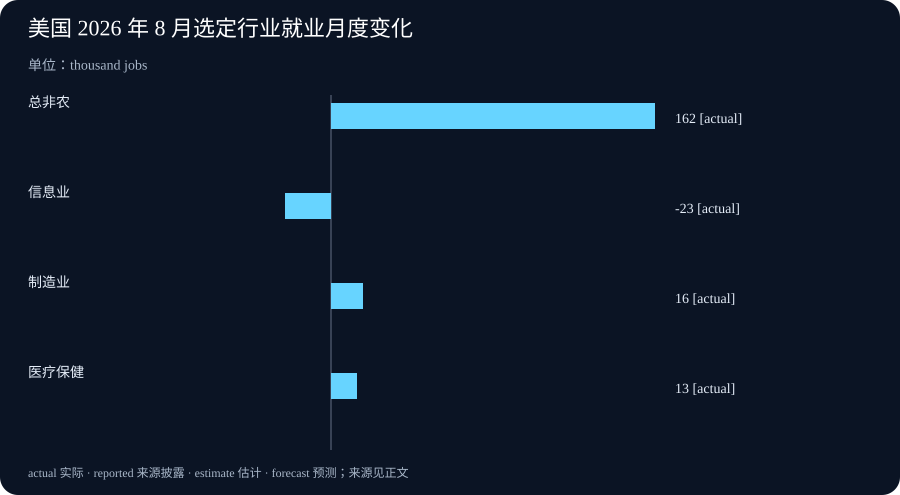

Daily Intelligence
2026-09-07 · Monday · 信息截止 07:20（Asia/Shanghai）
Today’s Thesis｜当智能体加速研究，治理的单位应从“模型”变成“可审计的工作回路”
研究型智能体把写代码、运行实验和整理结果压缩到更短的周期，但它不会自动消除优先级、评估、算力与安全这些瓶颈。OpenAI 披露的内部数据是一个供应商在特定组织、工具与测量方法下的观察；Anthropic 的企业控制方案则显示，面对跨会话风险，保存、监测和审查的责任必须被明确地交还给客户。8 月美国就业数据也提醒我们：总体就业增加与信息行业减少可以同时发生，不能由单月行业变化推出 AI 已经造成了特定就业结果。
Executive Summary｜执行摘要
- OpenAI 称其已达到“研究实习生”这一内部目标：系统在人工指导下可完成定义清楚、熟练研究人员需要数天的任务；这是公司自述的能力门槛，并不是独立审计或通用科研产出的证明。来源
- 该文称，截至 8 月中旬，研究组织的编码智能体总运行量按标准 8 小时工作日折算为每个人人类工作日对应 3.1 个智能体工作日；中位研究者的日推理用量按 API 定价超过 600 美元。指标描述内部使用与估算口径，不能直接换算为生产率或研发质量。来源
- Anthropic 宣布 Enterprise Frontier Safeguards（EFS）：将零数据保留与滥用检测结合，活动数据可存放在客户控制的云账户，告警交给客户审查；分阶段推出的计划不是现有客户已完成部署的证据。来源
- 美国劳工统计局初步报告显示，8 月非农就业增加 16.2 万、失业率维持 4.1%；信息行业减少 2.3 万，其中计算基础设施、数据处理、托管和相关服务减少 0.8 万。调查和季调估计会修订，单月行业变动不识别自动化或 AI 的因果作用。来源
AI Daily｜从并发会话到可复核实验
OpenAI 将“研究实习生”定义为在人工指挥下完成边界明确的研究任务，且这些任务原本可能占用熟练研究人员数天。来源 这一定义有一个重要限定：它描述的是受方向约束的任务执行，而不是系统自行选择问题、验证结论并承担研究责任。把这类能力接入实验室时，最先要固定的不是会话数量，而是任务卡：目标、输入版本、允许工具、成功判据、停止条件和最终责任人。
文中披露，研究人员正在更频繁并发使用编码智能体，代码贡献和实验数量上升；同时也承认研究的总体速度未必与这些单项指标同步，因为研究流程包含提出改进、编写评估、搭建基础设施、发现不安全行为和集成结果等多个环节。来源 因而，运行次数、token 成本、生成代码行数都只能作为过程指标。若没有独立评估、可重复的运行记录和对失败实验的归档，它们无法说明某个想法更可靠，也无法说明模型进步被正确归因。
更稳健的工作回路可以分成四段。第一段让人选择问题并写下可证伪假设；第二段让智能体在隔离环境中提出或实现候选；第三段由固定评估和人工复核决定是否保留结果；第四段把通过与未通过的证据、环境和成本一并记录。模型输出可进入第二段，但不应越过第三段直接成为结论、训练信号或生产改动。这样，速度提升不会把错误更快地复制到后续步骤。
OpenAI 还称，Astra 的初步关键网络能力证据触发了额外的模型专属安全限制，并使相关强化学习工作转入更高安全环境；文中同时说明，其他模型的算力分配上升抵消了大部分受限模型的下降。来源 这是一个关于资源重新分配的内部观察，不是“安全控制没有成本”或“控制只会降低总能力”的一般结论。组织应分别记录被暂停的工作、替代的工作和没有被测量到的机会成本。
Business Daily｜企业需要保留控制权，而不只是购买隐私选项
EFS 的设计把一个常见矛盾说清楚：若为了检测跨会话、跨账户的严重滥用而保存足够长时间的活动数据，受监管企业又可能难以接受由新增外部数据方持有这些数据。Anthropic 称，EFS 让客户把活动数据存放在自己控制的云基础设施、加密密钥、访问策略和审计日志之下；自动监测发现的信号则直接发送给客户。来源 这是一项供应商架构与路线图，不等同于某家企业已经达到其监管、合同或安全要求。
采购讨论因此不应只问“是否零数据保留”。更有用的问题是：何种数据被保留、在哪个账户、由谁拥有解密权、保留期何时开始和结束、告警如何路由、谁能清除误报、谁对真正事件升级负责。数据主权、监测能力和人类审查是不同控制面；选择其中一个并不会自动满足另外两个。
Anthropic 说明，高级滥用可能跨多个会话和账户展开，因此逐条即时分析后即丢弃数据不足以做相关性判断；其先前对 Fable 5 使用 30 天数据保留，并称不会未经明确许可用企业数据训练。来源 这些是公司陈述，应作为供应商承诺与待核验配置记录，而不是替代客户自己的数据流审计。实际验收至少应测试：跨账户关联的范围、误报的复核时间、权限变更是否留下审计链，以及合同终止后的数据清除证据。
对于研发团队，这也改变了成本账本。并发智能体可能降低实验排队时间，却提高算力、日志、隔离环境、评估维护和人工复核需求。预算不该只按每次调用计价，还应按“一个可接受结论”的总成本计价：包括失败运行、复现、审计和修复。这样才能避免把可见的推理费用优化掉，却把不可见的控制成本转给安全与合规团队。
Macro Observation｜就业总量与行业结构不能互相代替
BLS 报告称，8 月非农就业增加 16.2 万，高于此前 12 个月平均每月 3.1 万；失业率为 4.1%，劳动力参与率从 61.4% 升至 61.6%。来源 这两类数字来自不同调查，覆盖范围和误差不同；BLS 也明确说明，建立调查中约 12.2 万的月度变化才具有统计显著性，而家庭调查的相应阈值约为 65 万。来源 因此，标题数字与细分行业数字都需要放回其调查设计和修订机制中理解。
信息行业 8 月减少 2.3 万，此前 12 个月平均每月减少 0.8 万；其中计算基础设施、数据处理、网络托管及相关服务减少 0.8 万，出版业减少 0.7 万，广播与内容提供商减少 0.5 万。来源 这些分类覆盖的业务远大于 AI，也可能受到招聘节奏、项目周期、样本、季调、外包和一般需求变化影响。它们不能证明 AI 替代了岗位，也不能证明 AI 投资不足。
同一份报告中，制造业增加 1.6 万，机械制造和金属制品制造各增加 0.6 万；医疗保健增加 1.3 万，但低于此前 12 个月平均每月 3.2 万。来源 将不同产业的一个月变动连成单一技术叙事，会忽略需求、供给、季节因素和测量误差。更好的观察方式是把就业、工时、工资、职位空缺、企业资本开支和业务产出按连续月份并列，再检验它们是否在同一方向、同一时点出现。
工资端，私人非农平均时薪环比增加 0.3%，同比增加 3.1%，至 37.75 美元；平均每周工时上升 0.1 小时至 34.4 小时。来源 这能提示劳动力市场的价格和工时变化，却不能单独判断生产率、通胀趋势或企业利润。宏观读法应保留至少三种竞争解释，并等待后续月份和修订数据，而不是让一个行业分类承载因果结论。
Signal Dashboard｜信号仪表盘
| 信号 | 状态 | 证据边界 | 下一验证 |
|---|---|---|---|
| “研究实习生”内部目标 | 公司披露 | 特定任务与内部测量，不是独立科研基准 | 查看方法、失败率与外部复现 |
| 3.1 个智能体工作日/人类工作日 | 公司内部估算 | 运行量不等于质量或生产率 | 对照评估通过率、返工与算力成本 |
| EFS 客户控制存储 | 供应商宣布、分阶段推出 | 架构主张，不是客户合规认证 | 核验账户、密钥、日志与保留配置 |
| 8 月非农 +16.2 万 | 官方初步估计 | 可能修订，且来自建立调查 | 对照下一期修订与家庭调查 |
| 信息业 -2.3 万 | 官方行业估计 | 单月分类变化，不能归因 AI | 连续跟踪工时、职位空缺和营收 |
Deep Insight｜真正可扩展的不是代理数量，而是结论的可追溯性
智能体把研发流程压缩后，最稀缺的资源往往从“生成候选答案”转向“判断候选答案是否值得相信”。一个团队可以同时运行许多会话，却仍然只有有限的人能够定义问题、检查数据、审阅异常、决定停止并承担后果。若并发能力增加而这些关口没有被明确设计，团队看似获得更多实验，实际上只是在更快地制造未分类的不确定性。
可追溯性不是在最后附一份日志，而是让每个工作单元从开始就能回答五个问题：为何做、用了什么、运行了什么、如何判断、谁批准下一步。对模型提出的假设，要保存输入版本、工具调用范围、随机性或配置、产物哈希、评估脚本、人工异议和处置结果。这样，后来的人不必依赖一次对话记忆，就能分辨一个结果是观察、推断、供应商陈述，还是已经复现的事实。
这与企业监测架构的难题相同。为了识别跨会话的滥用模式，系统需要足够的关联信息；为了保护敏感资料，关联信息又不能无边界扩散。答案不是把所有数据交给模型供应商，或把所有日志一律删除，而是明确控制权：在客户账户内保存、以受限策略访问、让可解释的告警进入被授权的审查队列，并对每一步保留审计证据。控制位置、访问主体和保留期限必须可被验证，而不是只出现在销售材料中。
就业数据提供了另一种可追溯性训练。信息业就业下降是观测，AI 造成下降是因果假设，两者之间还缺少岗位任务、企业投入、产品需求、时间序列和反事实。把这一区分写入经营讨论并不会削弱决策，反而让团队知道下一步该补什么证据：连续月份、细分职业、公司招聘计划，或与工时和营收的交叉验证。没有这些补充，最自信的叙事也只是把相关性包装成机制。
因此，智能体治理的核心 KPI 不应是会话数、token 数或自动化百分比，而应是可复核结论的吞吐量：在既定时间内，有多少结果带着完整输入、可重复评估、明确责任人与已记录的失败条件。这个指标同时约束速度与质量，也让不同团队能够比较真实的交付，而不是比较谁产生了更多文本或更多未审查的代码。
可证伪条件也应预先设定：若智能体增加后评估通过率没有提高、返工或事故增多，则并发范围应收缩；若客户控制存储无法给出密钥、访问与删除的审计证据，则不应把它当作已满足的控制；若后续就业修订和多月数据不支持行业趋势，就应撤回从单月数字导出的判断。可撤销的结论与可追溯的动作，才是加速条件下最有价值的安全裕度。
Tomorrow Watch｜明日观察
- 为一项研究任务记录假设、输入版本、允许工具、评估脚本、停止条件和责任人。
- 把智能体运行量与评估通过率、人工复核时间、返工和安全事件并列，而非单独汇报 token。
- 要求供应商演示客户账户、密钥、访问策略、告警路由、保留期和删除审计的实际配置。
- 追踪 BLS 后续修订、信息业的工时与职位空缺，避免将单月分类变化解释成 AI 因果。
One Chart｜一图

图中为 BLS 8 月建立调查的选定行业就业月度变化：总非农 +16.2 万、信息业 -2.3 万、制造业 +1.6 万、医疗保健 +1.3 万。它们是同一调查中的季调初步估计，不能相加为 AI 的就业影响，也不能替代职业、工时或企业层面的分析。来源
Quote of the Day｜每日一句
“The purpose of computing is insight, not numbers.” — Richard W. Hamming
“计算的目的在于洞见，而不只是数字。”海军研究生院保存的 Hamming 材料将这句话列为其名言。对智能体研发而言，输出数量和运行次数应服务于可检验的理解；若不能复核输入、评估和责任，更多数字并不自动带来更多洞见。来源
Action Items｜行动项
- 用任务卡限制每个研究智能体的目标、输入、工具权限和停机条件。
- 将代码或实验产物与评估脚本、环境、人工复核和失败原因一起归档。
- 将企业 AI 控制验收拆成数据控制、监测、审查和事件升级四个独立测试项。
- 将单月就业变化标记为观察，等待连续数据后再讨论机制或归因。